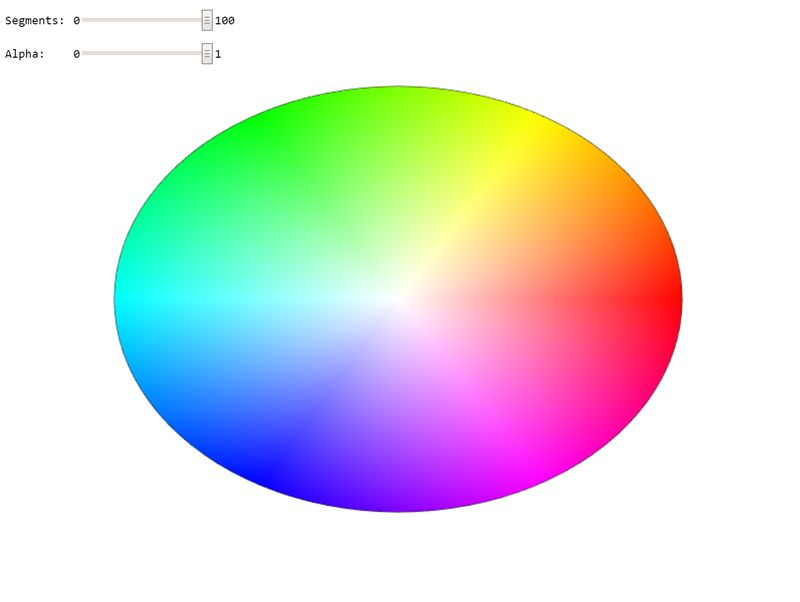

New Jersey Institute of Technology
Interactive Computer Graphics CS 438 / CS 657
Assignment 1
Author: Last Name, First Name, StudentID
Date: 2/11/2026
Due: 2/25/2026
Go to Assignment Home | Task 1 | Task 2 | Task 3 | Task 4
Task 2 (8 points)
Search for TODO_A1 in the JS file to find all tasks in the code!
Circle drawing and color interpolation:
2a: Create a circle geometry which can be rendered using triangle-fan topology. Use the arguments of the function to specify the radius of the circle and the number of linear segments to approximate it (3 points). Interpolate the color values on the circle linearly using the HUE of the HSV color-space (use function hsvToRgb(.,.,.)) (2 points).
2b: Adapt the rendering function to render the circle geometry as a triangle fan. Use the same geometry to render a black outline of the circle as a line strip. Take care of proper management of the position/color input layout for both passes (2 points). Your result should look like on the image below.
2c: Why is the displayed circle not round? Explain in the documentation below (1 point).

Your WebGPU Canvas
WebGPU: initializing Task 2 preview...
Documentation
Please write a short report here. It should list what you have implemented, as well as a brief discussion and your conclusions. Also add as many comments in your code as possible---it will help us in judging your work.
===========================================================================
More documentaiton here!!
Assignment Validation & Authorship
To ensure academic integrity and verify original authorship and mastery of the material, exams will include specific Validation Question. Programming assignments are assessed on both code functionality and your understanding of the implementation. To verify authorship, exams will include specific "Validation Questions" related to the logic and structure of your submitted assignments.
Penalty Policy: An incorrect answer to a validation question demonstrates a gap in understanding the submitted work. For each validation question answered incorrectly, 10% of the total points for the corresponding assignment will be retroactively deducted from that assignment's grade.
This deduction applies regardless of the original score received on the assignment. It is your responsibility to ensure you can explain and reproduce the logic of any code you submit.
Honor Code
A set of ethical principles governing this course:
- It is okay to share information and knowledge with your colleagues, but
- It is not okay to share the code,
- It is not okay to post or give out your code to others (also in the future!),
- It is not okay to use code from others (also from the past) for this assignment!
Any noticed disregard of these principles will be sanctioned as per the Academic Integrity Policy of NJIT (see below).
Academic Integrity / Institutional Policies
Academic Integrity is the cornerstone of higher education and is central to the ideals of this course and the university. Cheating is strictly prohibited and devalues the degree that you are working on. As a member of the NJIT community, it is your responsibility to protect your educational investment by knowing and following the academic code of integrity policy that is found at: http://www5.njit.edu/policies/sites/policies/files/academic-integrity-code.pdf".
Please note that it is the professional obligation and responsibility of the instructor to report any academic misconduct to the Dean of Students Office. Any student found in violation of the code by cheating, plagiarizing or using any online software inappropriately will result in disciplinary action. This may include a failing grade of F, and/or suspension or dismissal from the university. If you have any questions about the code of Academic Integrity, please contact the Dean of Students Office at dos@njit.edu.
Good Luck!
Instructor: Dr. Przemyslaw Musialski, Associate Professor
Email: przemyslaw.musialski@njit.edu
Copyright (c) 2019-2026 Przemyslaw Musialski